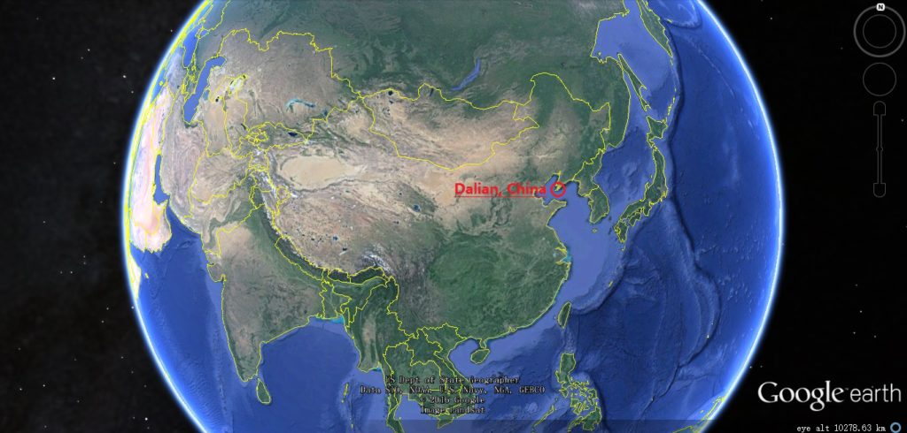
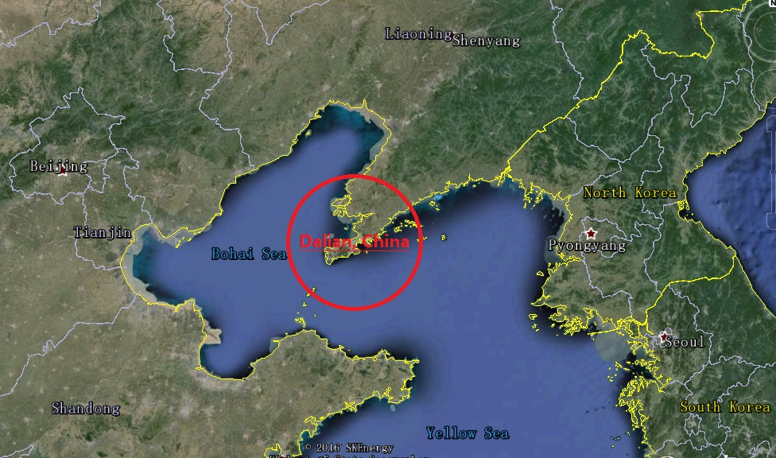
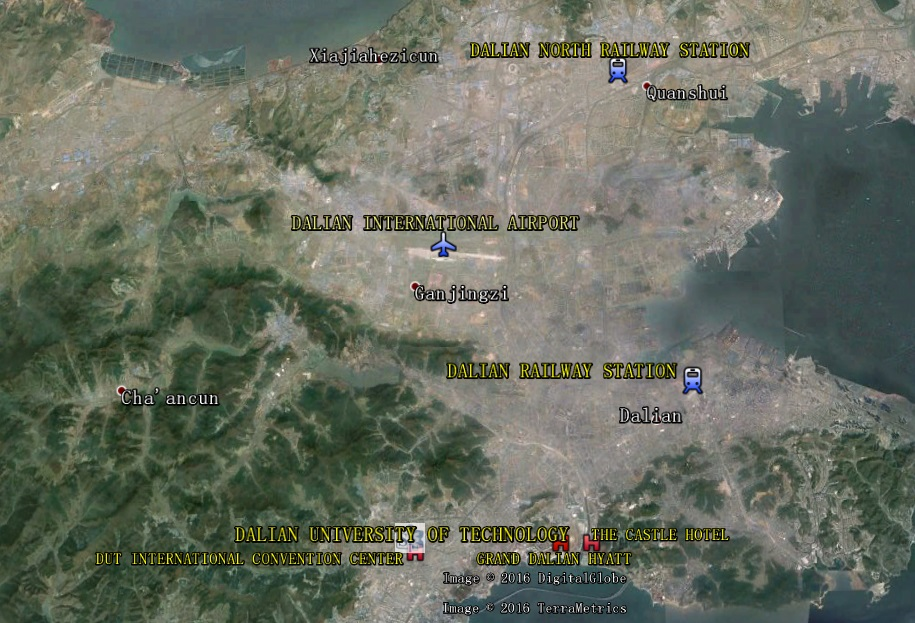
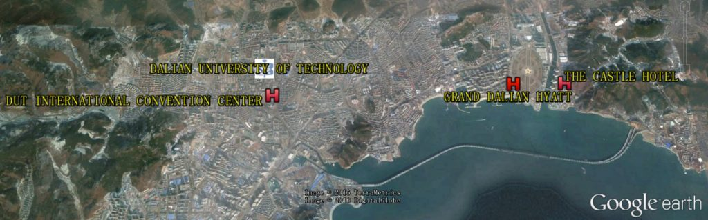

Transportation
1. Where is Dalian ?


2. Where is Dalian University of Technology ?

(1) Dalian North Railway Station (大连北站)
Note: The North Station is kind of far from the campus (23 kilometers) and there isn’t a non-stop solution of public transport. You can take the Dalian Metro Line 1 till the termination (Convention and Exhibition Center Station) and take a bus (Line 23) or a taxi/uber/didi to DUT.
- PUBLIC TRANSPORT
Time: around 1h
Cost: around 5RMB1. Find a Metro Entrance within Dalian North Railway Station
2. Take the Dalian Metro Line 1: North Station Station – Convention and Exhibition Center Station (Exit A)（地铁1号线：大连北站 – 会展中心站A口出）
3. Bus Line 23: Convention and Exhibition Center Station – Termination, East Gate of DUT（公交23路：会展中心站 – 终点站，大工东门 ）
4. Go south for 2 mins, you’ve arrived at the east gate of DUT
5. Walk towards the south gate of DUT (5 mins), you can find the CSWIM 2016 Venue -
TAXI / UBER / DIDI
Time: around 40mins – 1h
Cost: around 60RMB1. Walk out of the Dalian North Railway Station
2. Take a taxi/uber/didi to “South gate of Dalian University of Technology”
3. You’ve arrived at the south gate of DUT, just walk into it and you can find the Venue
(2) Dalian International Airport (大连周水子国际机场)
Note: We recommend you take a taxi/uber/didi to DUT, since the airport is not far from the campus (11 kilometers), and wouldn’t cost you a lot time or budget.
- PUBLIC TRANSPORT
Time: around 1.5h
Cost: around 5 RMB
1. Walk out of the Dalian International Airport
2. Take the Dalian Metro Line 2: Airport Station – Wanjia Station (Exit B)
3. Bus Line 3: Wanjiacun – Xinxin Square
4. Go east for 2 mins, you’ve arrived at the north gate of DUT
5. Walk towards the south gate of DUT (30 mins), you can find the CSWIM 2016 Venue
- TAXI / UBER / DIDI
Time: 30 mins – 40 mins
Cost: around 30 RMB
1. Walk out of the Dalian International Airport
2. Take a taxi/uber/didi to “South gate of Dalian University of Technology”
3. You’ve arrived at the south gate of DUT, just walk into it and you can find the Venue
(2) Dalian Railway Station (大连站)
Note: Since the Dalian Railway Station is not far from the campus (13 kilometers) and there’s a non-stop public transport solution, you could either take a taxi/uber/didi or choose the BUS.
- PUBLIC TRANSPORT
Time: around 30 mins – 40 mins
Cost: 1 RMB
1. Walk out of the south entrance of Dalian Railway Station and go south for 10 mins to the Road Zhongshan, turn left to find the BUS stop – Friendship Square （从大连站南广场出站，向南走10分钟到中山路上，左转找到23路公交车友谊 广场站）
2. Take the Dalian Bus Line 23: Friendship Square – Termination, East Gate of DUT（公交23路：友谊广场 – 终点站，大工东门）
3. Go south for 2 mins, you’ve arrived at the east gate of DUT
4. Walk towards the south gate of DUT (5 mins), you can find the CSWIM 2016 Venue
-
TAXI / UBER / DIDI
Time: around 30 mins – 40 mins
Cost: around 30 RMB1. Walk out of the Dalian Railway Station
2. Take a taxi/uber/didi to “South gate of Dalian University of Technology”
3. You’ve arrived at the south gate of DUT, just walk into it and you can find the Venue
3. Where would we live ?

If you live in DUT INTERNATIONAL CONVENTION CENTER…
The hotel is located within Dalian University Technology campus and also the venue of CSWIM 2016. So you could just go to the conference hall by walk, leisurely.
If you live in GRAND DALIAN HYATT or THE CASTLE HOTEL…
These two hotels are not so far from DUT campus, and we would provide the shuttle bus service for free.
TIPS:
- The landscape of Dalian City comprehends high and low mountains, mainly hills. Sometimes you could easily get tired while walking (climbing).
- Dalian is a coastal city and the sunlight is strong in summertime, please pay attention to sun protection.
- There are many one-way roads in Dalian downtown area, it’s common that the return bus stop is not on the opposite of the road.
Hope to see you soon in CSWIM 2016 !